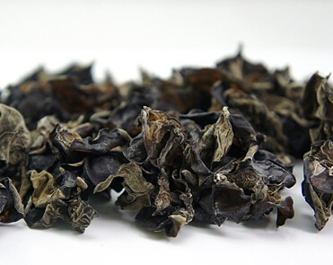
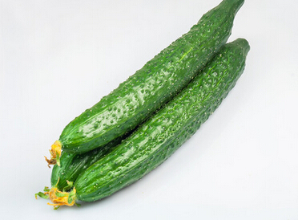
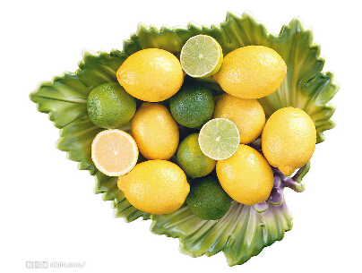
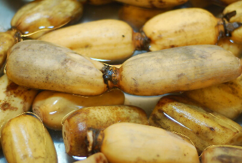
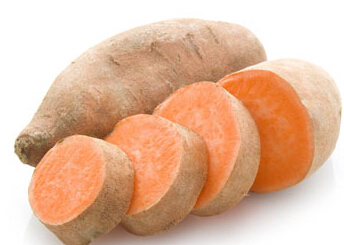
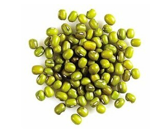
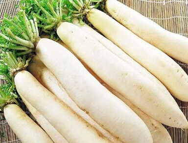
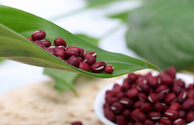
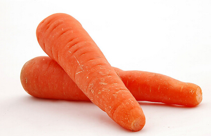

黑
木耳中所含的一种植物胶质，有较强的吸附力，可将残留在人体消化系统的灰尘杂质集中吸附，再排出体外，从而起到排毒清胃的作用。其还同时具有养血驻颜，令人肌肤红润，容光焕发的功效，并可防治缺铁性贫血。

《本草纲目》中记载，黄瓜有清热、解渴、利水、消肿之功效。黄瓜肉质脆嫩，汁多味甘，生食生津解渴，且有特殊芳香。据分析，黄瓜含水分为98%，富含蛋白质、糖类、维生素b2、维生素c、维生素e、胡
现代药理学研究认为，鲜黄瓜内还含有丙醇二酸，可以抑制糖类物质转化为脂肪。黄瓜中还含有纤维素，对促进肠蠕动、加快排泄和降低胆固醇有一定的作用。黄瓜的热量很低，对于高血压、高血脂以及合并肥胖症的糖尿病，是一种理想的食疗良蔬。吃黄瓜可以利尿，有助于清除血液中像尿酸那样潜在的有害物质。黄瓜味甘性凉，具有清热利水、解毒的功效。对胸热、利尿等有独特的功效，对除湿、滑肠、镇痛也有明显效果。
但是黄瓜偏寒，脾胃虚寒、久病体虚者宜少吃。有肝病、心血管病、肠胃病以及高血压的人，不要吃腌黄瓜。

柠檬含丰富的维生素c，被美容界视为制作美白护肤品的重要成分，尤其是夏季推出的美白保养品，柠檬更是其中不可或缺的主角。喝一杯柠檬水，除了可以排出体内有毒物质外，亦有天然的美白肌肤功效，有助于消除脸部雀斑。
除了以上介绍的几种食物，日常食品还有很多富含各种维生素、抗氧化剂和矿物质的食物，新鲜的蔬菜、水果。如:包心菜、花椰菜、洋菜、

莲藕有利尿作用，能促进体内废物快速排出藉此净化血液。莲藕冷热食用皆宜。但是，应该注意的是生藕性寒，有清热除烦之功，特别适合因血热而长“痘痘”的患者食用;煮熟后由凉变温，有养胃滋阴，健脾益气养血的功效，是一种很好的食补佳品，特别适合因脾胃虚弱、气血不足而表现为肌肤干燥、面色无华的人。此外，藕段间的藕节是一味良药，具有健脾开胃、养血、止血的作用，还能改善气色。
地瓜
地瓜所含的纤维质松软易消化，可促进肠胃蠕动，有助排便。是因为它含有丰富抗氧化的维他命c、β胡萝卜素、及足足超过

绿豆具清热解毒、除湿利尿、消暑解渴的功效。是由于绿豆富含维生素b、葡萄糖、蛋白质、淀粉酶、氧化酶、铁、钙、磷等多种成分，常食能帮助排泄体内毒素，促进机体的正常代谢。是清热解毒的佳品，味道清香，老少咸宜。

萝卜有很好的利尿效果，所含的纤维素也可促进排便，利于减肥。如果想利用萝卜来排毒，则适合生食。萝卜是一年四季的药膳，尤其是生食的作用比烹煮后好得多。白萝卜可帮助消化，刺激肠胃蠕动，并促进新陈代谢和体内毒素的排出，尤其适合不经常运动的人和高强度脑力工作者。

红豆可增加肠胃蠕动，减少便秘，促进排尿。红豆有清心养神、健脾益肾功效，加入莲子、百合更有固精益气、止血、强健筋骨等作用，能治肺燥、干咳，提升内脏活力，增强体力。
胡萝卜
胡萝卜对改善便秘很有帮助，也富含β-胡萝卜素，可中和毒素。新鲜的胡萝卜排毒效果比较好。胡萝卜是有效的解毒食物，它不仅含有丰富的胡萝卜素，而且含有大量的维生素a和果胶，与体内的汞离子结合之后，能有效降低血液中汞离子的浓度，加速体内汞离子的排出，非常适合经常熬夜的人。